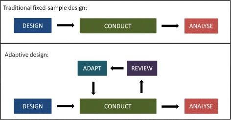

Adaptive trials
Chris Oldmeadow
27/03/2021
What are the problems with a standard RCT?
- Uncertainty in many design parameters
- Ignore what occurs before and during trial
- Inefficient
Driving with your eyes closed
There is a solution!
Adaptive trials
What is an adaptive trial?
A clinical trial design that allows for prospectively planned modifications to one or more aspects of the design based on accumulating data from subjects in the trial.
Adaptive Design Clinical Trials for Drugs and Biologics Guidance for Industry, Nov 2019.
A different paradigm
 Pallmann, P., Bedding, A.W., Choodari-Oskooei, B. et al. Adaptive designs in clinical trials: why use them, and how to run and report them. BMC Med 16, 29 (2018)
What can we adapt?
- Sample size
- Patient population (Adaptive enrichment)
- Treatment arm selection
- Allocation ratios
- Outcome and time-points
Using a GPS to find the best course
When is it appropriate?
- Outcomes are available shortly after randomisation
- Recruitment is slow
Traditional Frequentist framework
p-value = probability (under identical replicated experiments) of getting a result more extreme if the null hypothesis were true
α = Type 1 error rate
- Probability of asserting an effect if the effect is truly zero
- increases with more “looks at the data”, outcomes, groups
Bayesian framework
P = Posterior probability of effect (given the data and prior beliefs)  courtesy: https://medium.com/analytics-vidhya/hyperparameter-search-bayesian-optimization
courtesy: https://medium.com/analytics-vidhya/hyperparameter-search-bayesian-optimization
- not conditional on a null hypothesis
- not biased by the number of times it is calculated
- 1-P = false positive probability
Example: “pick the winner”
- Goal: to select an appropriate dose and confirm the safety and effectiveness
- Do this efficiently
- randomise subjects to one of N dose arms (+/- control)
- carry the “best dose” forward to next phase
Response adaptive randomisation
- Continually evaluate the data (Bayesian framework)
- Adapt allocation ratio depending on “Probability each treatment is the best”
- Information goes where needed
- Drop arms -> accelerates the process
Sub-group enrichment
- some sub-groups might perform better for different interventions
- A platform trial adapts both the number of interventions (the ratios), and the sub-groups
Advantages of Adaptive Trials
Statistical efficiency
More participants get better interventions
Drop interventions that don’t improve outcomes
Add new interventions when available
Increase/stop recruitment in subgroups
Disadvantages
- pre planning adaptive design modifications -> much more front-loading of effort**
- longer lead times between planning and starting the trial.
Adaptive trials vs adaptive interventions
- eg SMART trials
- individual tailored interventions
- decisions based at the individuals(or cluster) performance
- ignore the collective information (different aims)